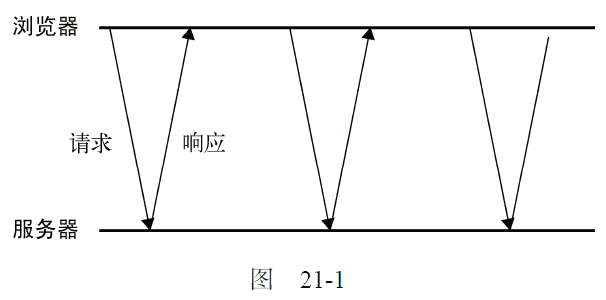
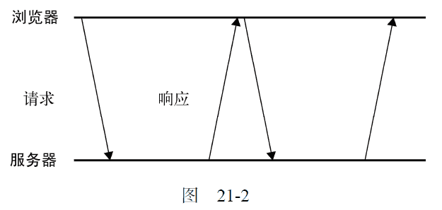

21.5 其他跨域技术
在CORS 出现以前，要实现跨域Ajax 通信颇费一些周折。开发人员想出了一些办法，利用DOM 中能够执行跨域请求的功能，在不依赖XHR 对象的情况下也能发送某种请求。虽然CORS 技术已经无处不在，但开发人员自己发明的这些技术仍然被广泛使用，毕竟这样不需要修改服务器端代码。
21.5.1 图像Ping
上述第一种跨域请求技术是使用<img>标签。我们知道，一个网页可以从任何网页中加载图像，不用担心跨域不跨域。这也是在线广告跟踪浏览量的主要方式。正如第13 章讨论过的，也可以动态地创建图像，使用它们的onload 和onerror 事件处理程序来确定是否接收到了响应。动态创建图像经常用于图像Ping。图像Ping 是与服务器进行简单、单向的跨域通信的一种方式。
请求的数据是通过查询字符串形式发送的，而响应可以是任意内容，但通常是像素图或204 响应。通过图像Ping，浏览器得不到任何具体的数据，但通过侦听load 和error 事件，它能知道响应是什么时候接收到的。来看下面的例子。
var img = new Image();
img.onload = img.onerror = function(){
alert("Done!");
};
img.src = "http://www.example.com/test?name=Nicholas";
运行一下
这里创建了一个Image 的实例，然后将onload 和onerror 事件处理程序指定为同一个函数。这样无论是什么响应，只要请求完成，就能得到通知。请求从设置src 属性那一刻开始，而这个例子在请求中发送了一个name 参数。
图像Ping 最常用于跟踪用户点击页面或动态广告曝光次数。图像Ping 有两个主要的缺点，一是只能发送GET 请求，二是无法访问服务器的响应文本。因此，图像Ping 只能用于浏览器与服务器间的单向通信。
21.5.2 JSONP
JSONP 是JSON with padding（填充式JSON 或参数式JSON）的简写，是应用JSON 的一种新方法，在后来的Web 服务中非常流行。JSONP 看起来与JSON 差不多，只不过是被包含在函数调用中的JSON，就像下面这样。
callback({ "name": "Nicholas" });
JSONP 由两部分组成：回调函数和数据。回调函数是当响应到来时应该在页面中调用的函数。回调函数的名字一般是在请求中指定的。而数据就是传入回调函数中的JSON数据。下面是一个典型的JSONP请求。
http://freegeoip.net/json/?callback=handleResponse
这个URL 是在请求一个JSONP 地理定位服务。通过查询字符串来指定JSONP 服务的回调参数是很常见的，就像上面的URL 所示，这里指定的回调函数的名字叫handleResponse()。
JSONP 是通过动态<script>元素（要了解详细信息，请参考第13 章）来使用的，使用时可以为src 属性指定一个跨域URL。这里的<script>元素与<img>元素类似，都有能力不受限制地从其他域加载资源。因为JSONP 是有效的JavaScript 代码，所以在请求完成后，即在JSONP 响应加载到页面中以后，就会立即执行。来看一个例子。
function handleResponse(response) {
alert("You’re at IP address " + response.ip + ", which is in " + response.city + ", " + response.region_name);
}
var script = document.createElement("script");
script.src = "http://freegeoip.net/json/?callback=handleResponse";
document.body.insertBefore(script, document.body.firstChild);
运行一下
这个例子通过查询地理定位服务来显示你的IP 地址和位置信息。
JSONP 之所以在开发人员中极为流行，主要原因是它非常简单易用。与图像Ping 相比，它的优点在于能够直接访问响应文本，支持在浏览器与服务器之间双向通信。不过，JSONP 也有两点不足。
首先，JSONP 是从其他域中加载代码执行。如果其他域不安全，很可能会在响应中夹带一些恶意代码，而此时除了完全放弃JSONP 调用之外，没有办法追究。因此在使用不是你自己运维的Web 服务时，一定得保证它安全可靠。
其次，要确定JSONP 请求是否失败并不容易。虽然HTML5 给<script>元素新增了一个onerror事件处理程序，但目前还没有得到任何浏览器支持。为此，开发人员不得不使用计时器检测指定时间内是否接收到了响应。但就算这样也不能尽如人意，毕竟不是每个用户上网的速度和带宽都一样。
21.5.3 Comet
Comet 是Alex Russell①发明的一个词儿，指的是一种更高级的Ajax 技术（经常也有人称为“服务器推送”）。Ajax 是一种从页面向服务器请求数据的技术，而Comet 则是一种服务器向页面推送数据的技术。Comet 能够让信息近乎实时地被推送到页面上，非常适合处理体育比赛的分数和股票报价。
有两种实现Comet 的方式：长轮询和流。长轮询是传统轮询（也称为短轮询）的一个翻版，即浏览器定时向服务器发送请求，看有没有更新的数据。图21-1 展示的是短轮询的时间线。

长轮询把短轮询颠倒了一下。页面发起一个到服务器的请求，然后服务器一直保持连接打开，直到有数据可发送。发送完数据之后，浏览器关闭连接，随即又发起一个到服务器的新请求。这一过程在页面打开期间一直持续不断。图21-2 展示了长轮询的时间线。

无论是短轮询还是长轮询，浏览器都要在接收数据之前，先发起对服务器的连接。两者最大的区别在于服务器如何发送数据。短轮询是服务器立即发送响应，无论数据是否有效，而长轮询是等待发送响应。轮询的优势是所有浏览器都支持，因为使用XHR 对象和setTimeout()就能实现。而你要做的就是决定什么时候发送请求。
第二种流行的Comet 实现是HTTP 流。流不同于上述两种轮询，因为它在页面的整个生命周期内只使用一个HTTP 连接。具体来说，就是浏览器向服务器发送一个请求，而服务器保持连接打开，然后周期性地向浏览器发送数据。比如，下面这段PHP 脚本就是采用流实现的服务器中常见的形式。
<?php
$i = 0;
while ( true ) {
// 输出一些数据，然后立即刷新输出缓存
echo "Number is $i";
flush ();
// 等几秒钟
sleep ( 10 );
$i ++;
}
所有服务器端语言都支持打印到输出缓存然后刷新（将输出缓存中的内容一次性全部发送到客户端）的功能。而这正是实现HTTP 流的关键所在。
在Firefox、Safari、Opera 和Chrome 中，通过侦听readystatechange 事件及检测readyState的值是否为3，就可以利用XHR 对象实现HTTP 流。在上述这些浏览器中，随着不断从服务器接收数据，readyState 的值会周期性地变为3。当readyState 值变为3 时，responseText 属性中就会保存接收到的所有数据。此时，就需要比较此前接收到的数据，决定从什么位置开始取得最新的数据。使用XHR 对象实现HTTP 流的典型代码如下所示。
function createStreamingClient(url, progress, finished) {
var xhr = new XMLHttpRequest(),
received = 0;
xhr.open("get", url, true);
xhr.onreadystatechange = function() {
var result;
if (xhr.readyState == 3) {
//只取得最新数据并调整计数器
result = xhr.responseText.substring(received);
received += result.length;
//调用progress 回调函数
progress(result);
} else if (xhr.readyState == 4) {
finished(xhr.responseText);
}
};
xhr.send(null);
return xhr;
}
var client = createStreamingClient("streaming.php",
function(data) {
alert("Received: " + data);
},
function(data) {
alert("Done!");
});
运行一下
这个createStreamingClient()函数接收三个参数：要连接的URL、在接收到数据时调用的函数以及关闭连接时调用的函数。有时候，当连接关闭时，很可能还需要重新建立，所以关注连接什么时候关闭还是有必要的。
只要readystatechange 事件发生，而且readyState 值为3，就对responseText 进行分割以取得最新数据。这里的received 变量用于记录已经处理了多少个字符，每次readyState 值为3 时都递增。然后，通过progress 回调函数来处理传入的新数据。而当readyState 值为4 时，则执行finished 回调函数，传入响应返回的全部内容。
虽然这个例子比较简单，而且也能在大多数浏览器中正常运行（IE 除外），但管理Comet 的连接是很容易出错的，需要时间不断改进才能达到完美。浏览器社区认为Comet 是未来Web 的一个重要组成部分，为了简化这一技术，又为Comet 创建了两个新的接口。
21.5.4 服务器发送事件
SSE（Server-Sent Events，服务器发送事件）是围绕只读Comet 交互推出的API 或者模式。SSE API用于创建到服务器的单向连接，服务器通过这个连接可以发送任意数量的数据。服务器响应的MIME类型必须是text/event-stream，而且是浏览器中的JavaScript API 能解析格式输出。SSE 支持短轮询、长轮询和HTTP 流，而且能在断开连接时自动确定何时重新连接。有了这么简单实用的API，再实现Comet 就容易多了。
支持SSE 的浏览器有Firefox 6+、Safari 5+、Opera 11+、Chrome 和iOS 4+版Safari。
1. SSE API
SSE 的JavaScript API 与其他传递消息的JavaScript API 很相似。要预订新的事件流，首先要创建一个新的EventSource 对象，并传进一个入口点：
var source = new EventSource("myevents.php");
注意，传入的URL 必须与创建对象的页面同源（相同的URL 模式、域及端口）。EventSource 的实例有一个readyState 属性，值为0 表示正连接到服务器，值为1 表示打开了连接，值为2 表示关闭了连接。
另外，还有以下三个事件。
-
open：在建立连接时触发。
-
message：在从服务器接收到新事件时触发。
-
error：在无法建立连接时触发。
就一般的用法而言，onmessage 事件处理程序也没有什么特别的。
source.onmessage = function(event) {
var data = event.data;
//处理数据
};
服务器发回的数据以字符串形式保存在event.data 中。
默认情况下，EventSource 对象会保持与服务器的活动连接。如果连接断开，还会重新连接。这就意味着SSE 适合长轮询和HTTP 流。如果想强制立即断开连接并且不再重新连接，可以调用close()方法。
source.close();
2. 事件流
所谓的服务器事件会通过一个持久的HTTP 响应发送，这个响应的MIME 类型为text/event-stream。响应的格式是纯文本，最简单的情况是每个数据项都带有前缀data:，例如：
data: foo
data: bar
data: foo
data: bar
对以上响应而言，事件流中的第一个message 事件返回的event.data 值为"foo"，第二个message 事件返回的event.data 值为"bar"，第三个message 事件返回的event.data 值为"foo\nbar"（注意中间的换行符）。对于多个连续的以data:开头的数据行，将作为多段数据解析，每个值之间以一个换行符分隔。只有在包含data:的数据行后面有空行时，才会触发message 事件，因此在服务器上生成事件流时不能忘了多添加这一行。
通过id:前缀可以给特定的事件指定一个关联的ID，这个ID 行位于data:行前面或后面皆可：
data: foo
id: 1
设置了ID 后，EventSource 对象会跟踪上一次触发的事件。如果连接断开，会向服务器发送一个包含名为Last-Event-ID 的特殊HTTP 头部的请求，以便服务器知道下一次该触发哪个事件。在多次连接的事件流中，这种机制可以确保浏览器以正确的顺序收到连接的数据段。
21.5.5 Web Sockets
要说最令人津津乐道的新浏览器API，就得数Web Sockets 了。Web Sockets 的目标是在一个单独的持久连接上提供全双工、双向通信。在JavaScript 中创建了Web Socket 之后，会有一个HTTP 请求发送到浏览器以发起连接。在取得服务器响应后，建立的连接会使用HTTP 升级从HTTP 协议交换为WebSocket 协议。也就是说，使用标准的HTTP 服务器无法实现Web Sockets，只有支持这种协议的专门服务器才能正常工作。
由于Web Sockets 使用了自定义的协议，所以URL 模式也略有不同。未加密的连接不再是http://，而是ws://；加密的连接也不是https://，而是wss://。在使用Web Socket URL 时，必须带着这个模式，因为将来还有可能支持其他模式。
使用自定义协议而非HTTP 协议的好处是，能够在客户端和服务器之间发送非常少量的数据，而不必担心HTTP 那样字节级的开销。由于传递的数据包很小，因此Web Sockets 非常适合移动应用。毕竟对移动应用而言，带宽和网络延迟都是关键问题。使用自定义协议的缺点在于，制定协议的时间比制定JavaScript API 的时间还要长。Web Sockets 曾几度搁浅，就因为不断有人发现这个新协议存在一致性和安全性的问题。Firefox 4 和Opera 11 都曾默认启用Web Sockets，但在发布前夕又禁用了，因为又发现了安全隐患。目前支持Web Sockets 的浏览器有Firefox 6+、Safari 5+、Chrome 和iOS 4+版Safari。
1. Web Sockets API
要创建Web Socket，先实例一个WebSocket 对象并传入要连接的URL：
var socket = new WebSocket("ws://www.example.com/server.php");
注意，必须给WebSocket 构造函数传入绝对URL。同源策略对Web Sockets 不适用，因此可以通过它打开到任何站点的连接。至于是否会与某个域中的页面通信，则完全取决于服务器。（通过握手信息就可以知道请求来自何方。）
实例化了WebSocket 对象后，浏览器就会马上尝试创建连接。与XHR 类似，WebSocket 也有一个表示当前状态的readyState 属性。不过，这个属性的值与XHR 并不相同，而是如下所示。
-
WebSocket.OPENING (0)：正在建立连接。
-
WebSocket.OPEN (1)：已经建立连接。
-
WebSocket.CLOSING (2)：正在关闭连接。
-
WebSocket.CLOSE (3)：已经关闭连接。
WebSocket 没有readystatechange 事件；不过，它有其他事件，对应着不同的状态。readyState的值永远从0 开始。
要关闭Web Socket 连接，可以在任何时候调用close()方法。
socket.close();
调用了close()之后，readyState 的值立即变为2（正在关闭），而在关闭连接后就会变成3。
2. 发送和接收数据
Web Socket 打开之后，就可以通过连接发送和接收数据。要向服务器发送数据，使用send()方法并传入任意字符串，例如：
var socket = new WebSocket("ws://www.example.com/server.php");
socket.send("Hello world!");
因为Web Sockets 只能通过连接发送纯文本数据，所以对于复杂的数据结构，在通过连接发送之前，必须进行序列化。下面的例子展示了先将数据序列化为一个JSON 字符串，然后再发送到服务器：
var message = {
time: new Date(),
text: "Hello world!",
clientId: "asdfp8734rew"
};
socket.send(JSON.stringify(message));
接下来，服务器要读取其中的数据，就要解析接收到的JSON 字符串。
当服务器向客户端发来消息时，WebSocket 对象就会触发message 事件。这个message 事件与其他传递消息的协议类似，也是把返回的数据保存在event.data 属性中。
socket.onmessage = function(event) {
var data = event.data;
//处理数据
};
与通过send()发送到服务器的数据一样，event.data 中返回的数据也是字符串。如果你想得到其他格式的数据，必须手工解析这些数据。
3. 其他事件
WebSocket 对象还有其他三个事件，在连接生命周期的不同阶段触发。
-
open：在成功建立连接时触发。
-
error：在发生错误时触发，连接不能持续。
-
close：在连接关闭时触发。
WebSocket 对象不支持DOM 2 级事件侦听器，因此必须使用DOM 0 级语法分别定义每个事件处理程序。
var socket = new WebSocket("ws://www.example.com/server.php");
socket.onopen = function() {
alert("Connection established.");
};
socket.onerror = function() {
alert("Connection error.");
};
socket.onclose = function() {
alert("Connection closed.");
};
在这三个事件中，只有close 事件的event 对象有额外的信息。这个事件的事件对象有三个额外的属性：wasClean、code 和reason。其中，wasClean 是一个布尔值，表示连接是否已经明确地关闭；code 是服务器返回的数值状态码；而reason 是一个字符串，包含服务器发回的消息。可以把这些信息显示给用户，也可以记录到日志中以便将来分析。
socket.onclose = function(event) {
console.log("Was clean? " + event.wasClean + " Code=" + event.code + " Reason=" + event.reason);
};
21.5.6 SSE与Web Sockets
面对某个具体的用例，在考虑是使用SSE 还是使用Web Sockets 时，可以考虑如下几个因素。首先，你是否有自由度建立和维护Web Sockets 服务器？因为Web Socket 协议不同于HTTP，所以现有服务器不能用于Web Socket 通信。SSE 倒是通过常规HTTP 通信，因此现有服务器就可以满足需求。
第二个要考虑的问题是到底需不需要双向通信。如果用例只需读取服务器数据（如比赛成绩），那么SSE 比较容易实现。如果用例必须双向通信（如聊天室），那么Web Sockets 显然更好。别忘了，在不能选择Web Sockets 的情况下，组合XHR 和SSE 也是能实现双向通信的。